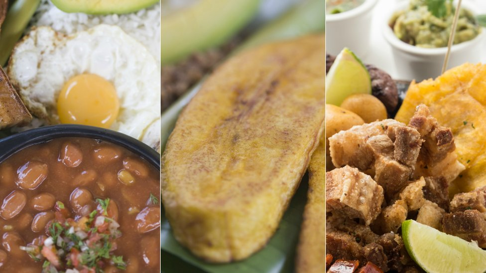
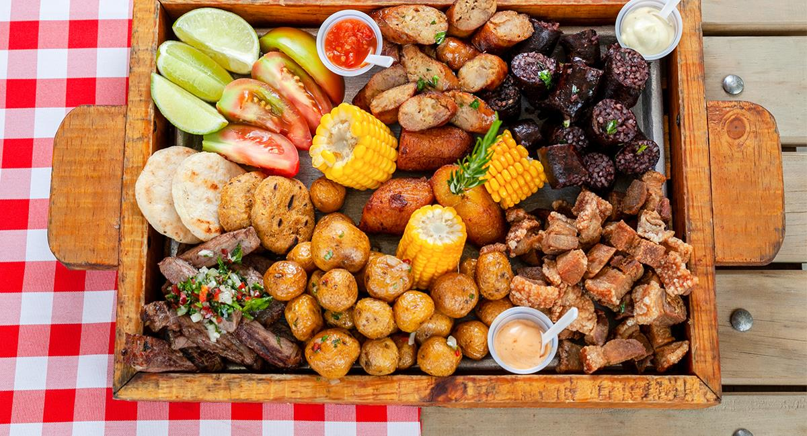
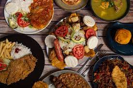

La gastronomía de Colombia es el resultado de la fusión de alimentos, prácticas y tradiciones culinarias de las culturas indoamericanas locales, europeas (principalmente española) y africanas. Aunque no hay consenso en cuanto a un único plato que represente a toda la gastronomía colombiana, son muy reconocidos el sancocho y la arepa en sus distintas variantes, la bandeja paisa, el ajiaco santafereño, el cholado, la changua, el caldo de pajarilla, el pandebono, el mote de queso, la lechona tolimense, la mamona o ternera a la llanera, el mute santandereano, el tamal y los pescados, sobre todo en las regiones costeras y ribereñas.1 La mejor opción para probar todos los platos nacionales es yendo a los diferentes festivales gastronómicos del país, tales como Alimentarte, Congreso Gastronómico de Popayán, Sabor Barranquilla, Cafés de Colombia Expo y Expovinos y las demás ferias del Grupo Éxito.

A continuación vamos a hablar más a fondo de las dos que más destacan en la gastronomia Colombiana, estas son: